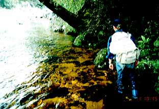

釣行日誌 ＮＺ編 「5000マイルを越えて」
マウンテンリバーでの第一投
1997/01/13(MON)-2
マウンテンリバーははるかビッグマウスの町へと流れる大河、ビッグリバーの支流の一つであり、サザーンアルプスから流れ出す山岳渓流である。
遠くにパパロア山脈の山並みが見え、その中の谷の一つを目指して、ヘリは進んでゆく。ヘッドフォンを付けると、デビッドとパイロットが何か話している。今日の着陸場所と３日後の予定などを話しているのだろう。ヘリに乗るのは初めてだが、意外と揺れるものである。右に左に小刻みに揺れ、機体の微動が、頭上のローターの回転を伝えてくる。渓谷の上をかなり低い高度で飛ぶようになると、幾分増水したマウンテンリバーの茶褐色の流れがすぐ目の下に見える。渓流の蛇行に合わせて左右に飛ぶヘリからの光景は、暮れの深夜に放映していた「ブルーサンダー」を思い起こさせるものがあった。
いざこれから原生林の奥地へ！と思う間も無くヘリは高度を下げ、開けた中州へと降り立った。もう降りるの？と思いながらもあわてて機外へ出て頭を下げヘリから遠ざかる。パイロットが親指を立てて「グッドラック！」を示しながら去っていった。私も手を振ってそれに答える。
ヘリの轟音が去ると渓谷はせせらぎの音だけになり、とうとうこうしてニュージーランドの川に立っているんだという実感がひしひしと押し寄せて来る。
デビッドがさあ支度をしな、と言うので、興奮でいささか震える手をだましだまし、ロッドを繋ぎ、リールを付け、ラインを結ぶ。リーダーは何を使うのかと聞くので、12フィートを少し詰めて、３Ｘをひとヒロ足すと答えると、それでいいと言う。
フライは何がいい？と訊くと、まぁドライで行ってみよう、ということで、ロイヤルウルフ12番を結ぶ。
デビッドがまず最初に向こうの場所で試しに数回振ってこい、と言う。中州を挟んで左岸側の流れに向け、数回キャストを行う。まずまずの出来である。デビッドの所に戻ると、彼はあっけなく、
「２尾見つけた」
と言う。うわーっ、ホントか？ ヘリで降りていきなり２尾か！と驚きつつ、慎重に彼の後に付いて、右岸側に大きく曲がり込んだ暗い淵を凝視する。主流は向こう岸に向かっており、こちら岸にはゆるやかな淵の水面が広がっている。と、10ｍほど向こうに、茶色の影が一つ、じっと上流を向いているのが見える。うーん、50cmはあるなと思っていると、デビッドが主流のやや下流側の淵の中央を見てみろと言う。なるほど、主流が運ぶ餌を最も採り易い位置に同じくらいの大きさの茶色の影が動いている。
「まず、１尾目を狙おう」
デビッドの言葉に従い、最初の一投をキャストする。5,000マイル（8,000km）の彼方の島国から運ばれたフライが、地球の反対側の島国の川の水面にふわりと落ちる。
しかし、目標の鱒からはぜんぜん違った場所である。もう一度！の声に励まされ、再びロッドを振ると、フライは思ったとおり鱒の１ｍ上流に落ちた。
「Excellent!」
という、デビッドのほめ言葉を受けじっとフライを注視する。が、しかし、影は何の反応も示さずそのまま居座るのみである。
「うーん、しぶいなァ。ニンフで行くか」
と言うので、小さめの黒いフェザントテールに結び換える。二投、三投してみるが、影は動かない。うーん、このへんはツアー会社のパンフレットに書いてあることと違うナ。と思いつつ、デビッドの言うままに、ヘアーズイヤー、カディス、ブラックパラシュートなど、数種類を試すが、鱒は沈黙を守ったままである。
まああいつはダメかなということで、下流で動いている２尾目を狙う。ドライ、シンキングドライ、ニンフなどいろいろ試すがこの１尾も私のフライを無視している。
自分で言うのもなんだが、この淵での私のキャスティングはほぼ90点のレベルであり、幾度もデビッドの「Excellent!」を頂戴しているのだが、彼らは何が気に入らないのか反応を見せない。私としてはかなりの増水による水温低下のせいではないかと思うが、経験が無いので何ともいえない。
30分ほど粘った後で、結局この２尾はあきらめ上流へと向かうことにする。広い河原をデビッドと２人、目をそれこそ鵜の目鷹の目状態にして魚影を探す。石の前後、流れの際、岸の木陰、淵の尻などなど。
マウンテンリバーの冷たい流れが私の太ももに静かな圧力を加える。両岸はまったく手つかずの原生林。人の気配、足跡、ゴミなどは皆無である。河原の石を見ると、色の違った線からは10cmほど水位が上がっている。この広い流れで10cmの増水ということは、かなり雨が降ったのだなあと思う。
ふと、先に歩いていたデビッドが足を止める。
「Look!」
声が指す方を見ると、岸辺の苔むした岩の間、水深わずか20cmほどの浅場に見事な魚体がゆらめいている。うーむ、こういうシチュエーションは増水後の渓流ではままあるのだが、なにせ魚が25cmのイワナではなく、60cmオーバーのブラウントラウトなのである。

喉から心臓！ 状態で、デビッドおすすめの黒いパラシュートを至近距離、ロッド２本分離れた所からサイドキャスト！魚の鼻つら50cmに落ちたフライがゆっくりと、ゆっくりと流れ、頭の上を通り、流れ去る。次は、小さめのニンフ。しかしダメ。ここでもハンピーなど５～６種類のフライを試すが、その鱒は微動だにしない。
まあしょうがないなということであきらめたデビッドが歩き出すと、そのブラウンは一目散に流心の彼方へと泳ぎ去っていった。あの時に特大のセミフライかなんかを投げてピクピクと泳がせてたらどうだったろうか？というのは今になって思うことである。その時はただ、何もわからない興奮状態のまっただ中であった。
釣行日誌ＮＺ編 目次へ
サイトマップ
ホームへ
お問い合わせ